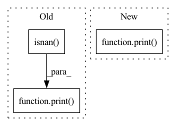

Pattern ID :33492
Before Change
// assert the input shape is : batch_seq_size x entities_size x embeding_size
// note: because the feature size of entity is not equal to 256, so it can not fed into transformer directly.
// thus, we add a embedding layer to transfer it to right size.
print( "entity_input is nan:", torch.isnan( x) .any()) if debug else None
// calculate there are how many real entities in each batch
tmp_x = torch.mean(x, dim=2, keepdim=False)
After Change
mask = mask.repeat(batch_size, 1)
mask = mask < entity_num.unsqueeze(dim=1)
print( "mask:", mask) if debug else None
print("mask.shape:", mask.shape) if debug else None
// mask: [batch_size, max_entities]
In pattern: SUPERPATTERN
Frequency: 3
Non-data size: 3
Instances Fragment ID: 96429565
Project Name: liuruoze/mini-alphastar
Commit Name: 612d42a7bf5ef827e1e919198d839fce106155cd
Time: 2021-11-25
Author: liuruoze@163.com
File Name: alphastarmini/core/arch/entity_encoder.py
M Class Name: EntityEncoder
N Class Name: EntityEncoder
M Method Name: forward(3)
N Method Name: forward(2)
M Parent Class: nn.Module
N Parent Class: nn.Module
M File Name: alphastarmini/core/arch/entity_encoder.py
N File Name: alphastarmini/core/arch/entity_encoder.py
M Start Line: 721
M End Line: 758
N Start Line: 716
N End Line: 778
Before Change
real, imag = sources[...,0], sources[...,1]
sources_amplitude = torch.sqrt(real**2+imag**2)
print( torch.isnan(mixture_amplitude).any(), torch.isnan( assignment) .any(), torch.isnan(threshold_weight).any(), flush=True)
estimated_sources_amplitude = self.model(mixture_amplitude, assignment=assignment, threshold_weight=threshold_weight, n_sources=sources.size(1))
print("estimated_sources_amplitude", torch.isnan(estimated_sources_amplitude).any(), flush=True)
loss = self.criterion(estimated_sources_amplitude, sources_amplitude)
print("loss", torch.isnan(loss).any(), flush=True)After Change
real, imag = sources[...,0], sources[...,1]
sources_amplitude = torch.sqrt(real**2+imag**2)
print( mixture_amplitude.size())
estimated_sources_amplitude = self.model(mixture_amplitude, assignment=assignment, threshold_weight=threshold_weight, n_sources=sources.size(1))
print("estimated_sources_amplitude", torch.isnan(estimated_sources_amplitude).any(), flush=True)
loss = self.criterion(estimated_sources_amplitude, sources_amplitude)
print("loss", torch.isnan(loss).any(), flush=True) Fragment ID: 96429564
Project Name: tky823/dnn-based_source_separation
Commit Name: deaa5934ad98fea96c3190cef52f059ff99da3fc
Time: 2021-01-29
Author: 40362510+tky823@users.noreply.github.com
File Name: egs/wsj0-mix/danet/src/adhoc_driver.py
M Class Name: AdhocTrainer
N Class Name: AdhocTrainer
M Method Name: run_one_epoch_train(2)
N Method Name: run_one_epoch_train(2)
M Parent Class: TrainerBase
N Parent Class: TrainerBase
M File Name: egs/wsj0-mix/danet/src/adhoc_driver.py
N File Name: egs/wsj0-mix/danet/src/adhoc_driver.py
M Start Line: 47
M End Line: 51
N Start Line: 47
N End Line: 51
Before Change
// seq - [batch_size, seq_len]
pos = torch.arange(0, seq.shape[1]).unsqueeze(0).repeat(seq.shape[0], 1).to(self.args.device)
seq = self.dropout((self.tok_embed(seq) * self.scale) + self.pos_encoding(pos))
print( any(torch.isnan( seq) .view(-1)))
seq = seq.transpose(0, 1)
out = self.transformer(seq, seq).transpose(0, 1)
print(seq, "\n", out)
return self.fc_out(out)After Change
def forward(self, seq):
// seq - [batch_size, seq_len]
mask = self._generate_square_subsequent_mask(seq.shape[1])
print( mask)
pos = torch.arange(0, seq.shape[1]).unsqueeze(0).repeat(seq.shape[0], 1).to(self.args.device)
seq = (self.tok_embed(seq) * self.scale) + self.pos_encoding(pos)
seq = seq.transpose(0, 1)
out = self.transformer(seq, seq).transpose(0, 1) Fragment ID: 96429563
Project Name: ammesatyajit/videobert
Commit Name: da701dd8f2ec37d38cc5c66982a1894cda0fef86
Time: 2020-09-19
Author: ammesatyajit@gmail.com
File Name: VideoBERT/train/custom_vid_transformer.py
M Class Name: VideoTransformer
N Class Name: VideoTransformer
M Method Name: forward(2)
N Method Name: forward(2)
M Parent Class: nn.Module
N Parent Class: nn.Module
M File Name: VideoBERT/train/custom_vid_transformer.py
N File Name: VideoBERT/train/custom_vid_transformer.py
M Start Line: 157
M End Line: 161
N Start Line: 156
N End Line: 159